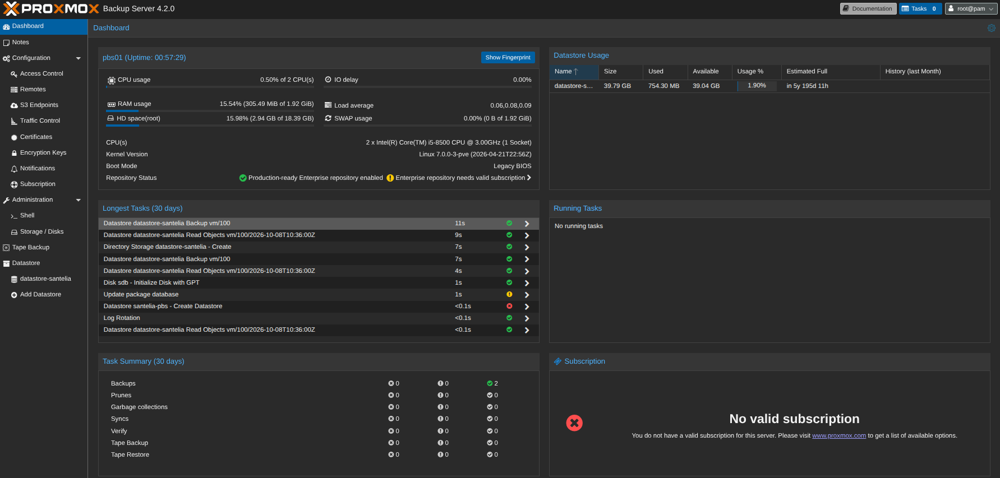
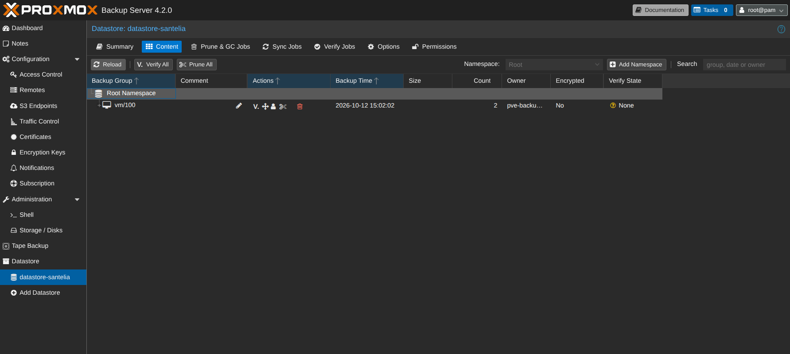
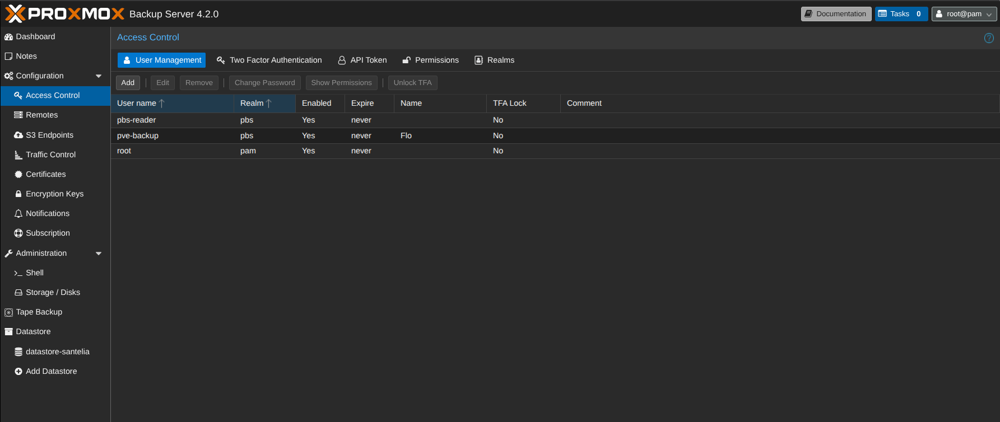
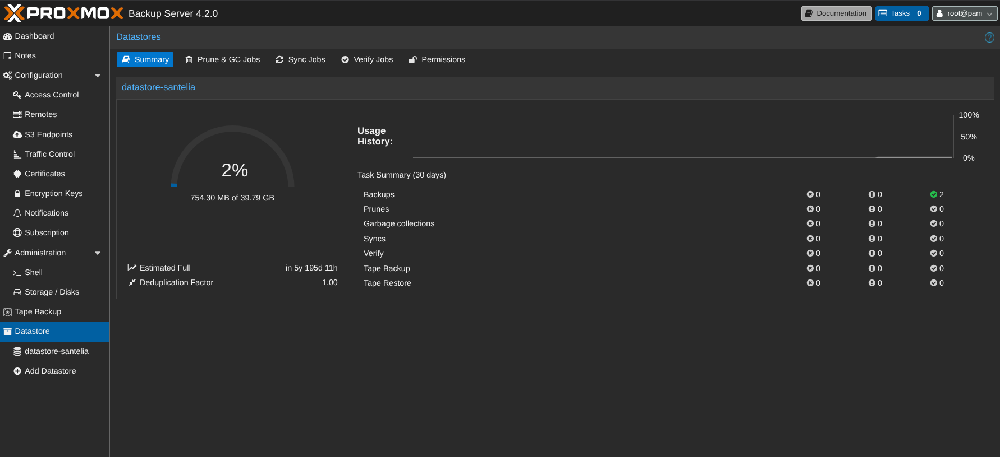
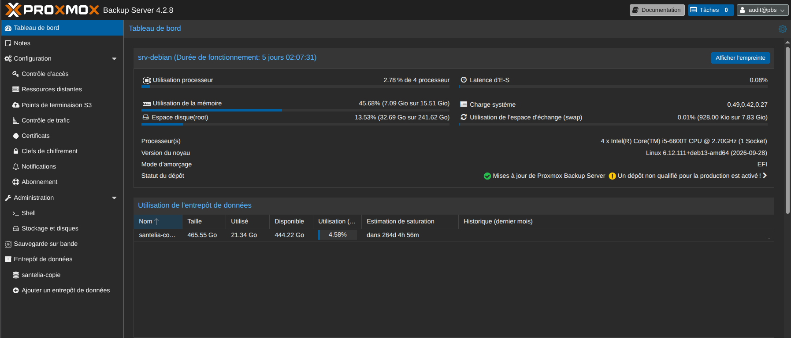
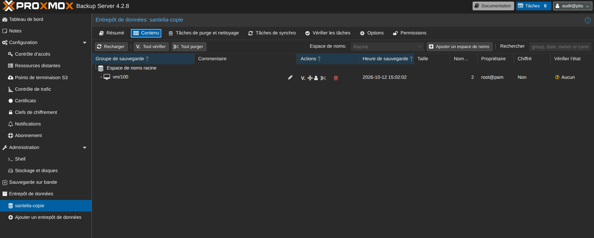
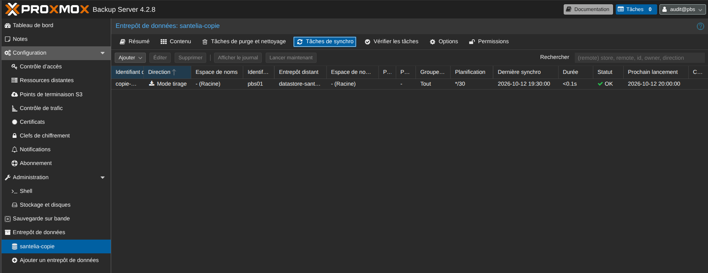

Ce que démontre la brique
- Une sauvegarde cohérente applicative, obtenue par l'appel à l'agent invité qui gèle puis libère le système de fichiers avant et après la capture. Sans lui, la sauvegarde resterait utilisable mais serait comparable à un arrêt brutal.
- Une restauration réellement exécutée, vers une machine distincte de l'originale, et une machine qui redémarre et rend son service.
- Une déduplication efficace, avec plus de quatre cinquièmes des données réutilisées dès la première passe, et 98 % à la seconde.
- Un compte de service à privilèges minimaux et une connexion authentifiée par l'empreinte du certificat du serveur.
- Une copie secondaire sur une machine physique distincte, qui tire ses données du serveur primaire sans détenir le moindre droit d'écriture chez lui, et ne retransfère que ce qu'elle ne possède pas déjà.
- Une fenêtre de perte maîtrisée, calculée sur le maillon le plus lent de la chaîne et non sur la fréquence de la copie.
- Huit points de vigilance identifiés en conditions réelles, dont une adresse IPv6 globale exposée hors du mécanisme de traduction d'adresses.
Le serveur primaire en images




La copie secondaire en images



Une distinction qu'il faut garder en tête
La réplication entre nœuds, déjà en place, apporte de la disponibilité. Elle ne protège pas de la perte de données, car elle réplique aussi les erreurs : une suppression ou une corruption se propage d'un nœud à l'autre.
La sauvegarde répond à un besoin différent, celui de revenir à un état antérieur connu. Les deux mécanismes sont complémentaires et ne se substituent pas l'un à l'autre.